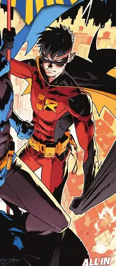

Círculo de Confiança

O Batman não opera inteiramente sozinho. Ao longo dos anos, formou alianças estratégicas com agentes cruciais para a justiça de Gotham.
Membros da Batfamília
- Alfred Pennyworth: Mordomo, mentor, médico de campo e guardião moral da Mansão Wayne.
- Dick Grayson (Asa Noturna): O Robin original, acrobata prodigioso e atual líder protetor de Blüdhaven.
- Jason Todd (Capuz Vermelho): O segundo Robin, que retornou com métodos mais implacáveis contra o crime.
- Tim Drake (Robin Vermelho): Jovem detetive que descobriu sozinho a identidade secreta do Batman.
- Barbara Gordon (Batgirl / Oráculo): Mente brilhante em cibersegurança e inteligência tática.
- Comissário James Gordon: O principal elo íntegro dentro do Departamento de Polícia de Gotham (GCPD).
Divisão de Operações em Gotham
Cada aliado monitora setores específicos da cidade através da rede da Torre do Relógio, coordenada pela Oráculo em conjunto com o supercomputador da Batcaverna.